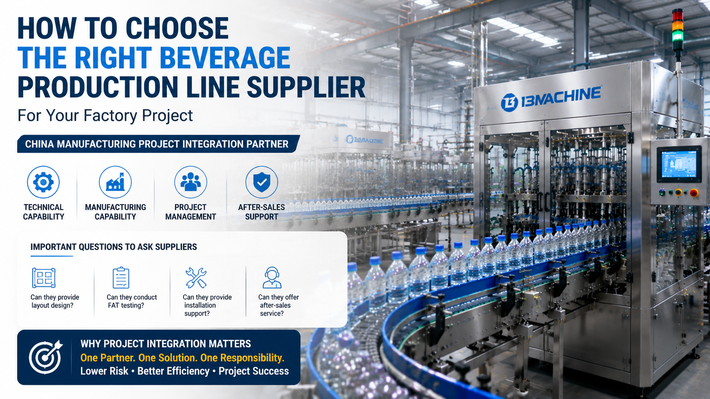

How Smart Beverage Factories Use Automation to Improve Quality and Traceability

Summary
Building a beverage factory is a major industrial investment.
For factory owners and project managers, choosing the right beverage production line supplier is often more important than choosing a single machine.
A successful beverage manufacturing project requires much more than equipment supply.
It requires:
Production process understanding
Factory layout design
Equipment integration capability
Project management experience
Installation support
Long-term technical cooperation
Many project failures happen because companies select suppliers based only on equipment price.
However, a beverage factory is a complete production system.
The right partner should help transform an initial factory idea into a reliable production solution.
This article explains how to evaluate beverage production line suppliers, what questions to ask before cooperation, and why project integration capability is becoming increasingly important in global manufacturing projects.
Technology
- What Capabilities Should a Beverage Production Line Supplier Have?
- A professional beverage production line supplier should not only manufacture equipment.
- They should understand the complete manufacturing process.
- 1. Process Engineering Capability
- A qualified supplier should understand:
- Beverage processing
- Bottle production
- Filling technology
- Packaging workflow
- Factory logistics
- Because every beverage project has different requirements.
- 2. Production Line Integration Capability
- A modern beverage factory includes multiple systems:
- Processing equipment
- Blow molding system
- Filling line
- Packaging equipment
- Conveyor system
- Warehouse automation
- The supplier must ensure all systems work together.
- 3. Automation Technology Capability
- Modern beverage factories require:
- PLC control
- Sensor systems
- Industrial communication
- Data monitoring
- Automation capability directly affects:
- Production stability
- Efficiency
- Future expansion
- 4. Smart Factory Integration Capability
- Advanced suppliers should understand:
- MES systems
- Production data collection
- Digital monitoring
- Warehouse integration
Challenge
Why Choosing the Right Beverage Production Line Supplier Is Difficult
When investors start planning a beverage factory, they usually face many supplier options.
However, different suppliers have very different capabilities.
Some companies only provide individual machines.
Others can deliver complete factory solutions.
The difference directly affects:
Project success
Production efficiency
Investment return
Challenge 1: Many Suppliers Focus Only on Equipment Sales
A machine supplier may provide:
Filling machine
Labeling machine
Packaging machine
But a complete factory requires much more.
The missing parts may include:
Process design
Layout planning
Integration
Commissioning
Challenge 2: Low Price Does Not Always Mean Low Total Cost
A cheaper machine may create hidden costs:
Production problems
Integration issues
Longer commissioning time
Additional modification costs
The real evaluation should focus on:
Total project value, not equipment price.
Challenge 3: Different Beverage Products Require Different Solutions
A supplier experienced in bottled water may not have enough experience with:
Juice production
Dairy beverages
Functional drinks
Aseptic filling
Technology selection must match the product.
Challenge 4: International Projects Require Strong Coordination
For overseas projects, challenges include:
Communication
Documentation
Shipping
Installation
Technical support
A supplier without international project experience can create significant risks.
Challenge 5: Future Expansion Must Be Considered
A factory built today may need to expand tomorrow.
A professional supplier should consider:
Capacity upgrades
New products
Automation expansion
Solution
How to Evaluate a Reliable Beverage Production Line Partner
Choosing a supplier should follow a complete evaluation process.
1. Evaluate Technical Capability
Ask:
Can the supplier provide:
Production Process Design?
Including:
Production flow
Equipment selection
Capacity calculation
Factory Layout Design?
Including:
Equipment arrangement
Material flow
Space optimization
Automation Planning?
Including:
Control system
Production monitoring
Integration strategy
2. Evaluate Manufacturing Capability
A reliable supplier should have:
Engineering team
Manufacturing facilities
Quality control process
Testing capability
Important questions:
Can they provide:
Factory inspection?
Equipment testing?
FAT documentation?
Quality records?
3. Evaluate Project Management Capability
A complete project requires coordination between:
Engineering
Manufacturing
Logistics
Installation
Commissioning
A strong project manager reduces communication problems.
4. Evaluate After-Sales Support
Ask suppliers:
Can they provide:
Installation guidance?
Operator training?
Remote support?
Spare parts supply?
5. Evaluate Integration Ability
The best partner understands that customers need:
A complete production system.
Not simply separate machines.
Workflow & Layout
Supplier Selection Workflow for Beverage Factory Projects
Project Requirement Analysis
↓
Supplier Evaluation
↓
Technical Proposal
↓
Factory Layout Design
↓
Equipment Configuration
↓
Quotation & ROI Analysis
↓
FAT Testing
↓
Shipping & Installation
↓
Production Commissioning
↓
Long-Term Support
Complete Project Cooperation Model
Stage 1: Factory Planning
Analyze:
Product type
Capacity
Market demand
Stage 2: Solution Design
Develop:
Process flow
Equipment list
Layout
Stage 3: Manufacturing
Complete:
Equipment production
Quality inspection
Factory acceptance testing
Stage 4: Delivery
Support:
Installation
Commissioning
Production startup
Results & ROI
- Why the Right Supplier Creates Higher Project Value
- Selecting the right partner reduces project risk and improves long-term performance.
- 1. Lower Project Risk
- Professional suppliers help avoid:
- Wrong equipment selection
- Poor integration
- Production delays
- 2. Faster Factory Startup
- Good project management improves:
- Manufacturing schedule
- Installation efficiency
- Commissioning speed
- 3. Better Production Performance
- A properly integrated system provides:
- Stable operation
- Higher efficiency
- Better quality
- 4. Lower Long-Term Operating Cost
- Good engineering reduces:
- Maintenance issues
- Production interruptions
- Energy waste
- 5. Better Future Expansion
- Professional planning allows:
- Capacity upgrades
- Automation improvement
- New product development
- ⭐ Example:
- Two suppliers offer similar filling equipment.
- 📌 Supplier A:
- Lower equipment price.
- But:
- No layout design
- No integration support
- Limited after-sales
- 📌 Supplier B:
- Higher initial investment.
- Provides:
- Factory planning
- Complete integration
- FAT testing
- Installation support
- For a factory project
- Supplier B may create much higher long-term value.
Equipment List
- A turnkey beverage production project may include:
- 📌 Beverage Processing System
- Water treatment system
- Mixing system
- CIP cleaning system
- Sterilization system
- 📌 Bottle Production System
- PET preform handling
- Blow molding machine
- Bottle conveyor system
- 📌 Filling & Packaging System
- Filling machine
- Capping machine
- Labeling machine
- Packaging machine
- 📌 Automation System
- PLC control system
- HMI system
- Sensors
- Industrial robots
- 📌 Logistics System
- Conveyor system
- Automatic palletizer
- AGV system
- ASRS warehouse
- 📌 Testing & Quality System
- Inspection equipment
- Production monitoring system
Project Overview / Opening
Choosing a Supplier Is Choosing Your Factory Future
A beverage production line is not just a collection of machines.
It is the foundation of factory operation for the next 10-20 years.
The right supplier should understand:
Your business goals
Production requirements
Market strategy
Future expansion plans
The best industrial partner is not the company that sells the cheapest machine.
It is the company that can transform your factory concept into a reliable production system.
Key Points
- Five Questions to Ask Before Choosing a Beverage Production Line Supplier
- 1. Can They Design My Factory Layout?
- A supplier should understand:
- Space utilization
- Production flow
- Logistics
- 2. Can They Provide Complete Project Integration?
- Ask whether they can coordinate:
- Multiple equipment systems
- Automation
- Production workflow
- 3. Do They Have Testing Capability?
- Important services include:
- FAT
- Quality inspection
- Performance verification
- 4. Can They Support Installation?
- International projects require:
- Technical support
- Commissioning assistance
- Training
- 5. Do They Understand Future Expansion?
- A good solution should support:
- Capacity growth
- Technology upgrades
Implementation / Workflow
How We Support Beverage Factory Projects
⭐Step 1: Understand Customer Requirements
Analyze:
Beverage type
Production capacity
Investment plan
⭐Step 2: Develop Technical Solution
Create:
Production process
Equipment configuration
Factory layout
⭐Step 3: Select Suitable Manufacturing Partners
Evaluate:
Technical capability
Manufacturing quality
Project experience
⭐Step 4: Manage Project Integration
Coordinate:
Equipment suppliers
Production systems
Delivery schedule
⭐Step 5: Support Final Delivery
Including:
FAT coordination
Installation support
Production startup
Customer Value / Results
Working with the right project partner helps manufacturers achieve:
📌 Reduced Investment Risk
Avoid unsuitable equipment decisions.
📌 Faster Project Execution
Improve communication and delivery efficiency.
📌 Reliable Production Performance
Create stable manufacturing operations.
📌 Better Cost Control
Optimize investment and operating expenses.
📌 One Responsible Project Interface
Instead of managing multiple suppliers, customers can communicate through one professional project partner.
Conclusion / Next Step
Choosing a beverage production line supplier is not only a purchasing decision.
It is a strategic decision that affects:
Factory efficiency
Product quality
Production reliability
Future expansion capability
Successful beverage projects require a partner who understands engineering, manufacturing, automation, and international project execution.
We help manufacturers worldwide design, source, integrate, and deliver industrial automation projects from China's manufacturing ecosystem.
As a China Manufacturing Project Integration Partner, we help global customers:
Evaluate suitable suppliers
Design production solutions
Coordinate equipment integration
Manage project delivery
Build reliable automated factories
Whether you are planning a new beverage factory or upgrading an existing production line, our team can support your project from concept to production.
📩 Contact us through our website Contact page and share your factory project requirements.
SEO Title
How Smart Beverage Factories Use Automation to Improve Quality and Traceability
SEO Description
Building a beverage factory is a major industrial investment.
For factory owners and project managers, choosing the right beverage production line supplier is often more important than choosing a single machine.
A successful beverage manufacturing project requires much more than equipment supply.
It requires:
Production process understanding
Factory layout design
Equipment integration capability
Project management experience
Installation support
Long-term technical cooperation
Many project failures happen because companies select suppliers based only on equipment price.
However, a beverage factory is a complete production system.
The right partner should help transform an initial factory idea into a reliable production solution.
This article explains how to evaluate beverage production line suppliers, what questions to ask before cooperation, and why project integration capability is becoming increasingly important in global manufacturing projects.
Related Blog
Start with Your Business Challenge
Tell us about your warehouse, factory, or production requirements. We'll help you explore practical automation solutions and relevant project references.